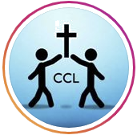

<header class="header">
    <div id="panelUsuario">
        <ul>
            <li><a [routerLink]="['/registro']" [routerLinkActive]="['actived']">Regístrate</a></li>
            <li><a [routerLink]="['/usuario']" [routerLinkActive]="['actived']">Área Usuarios</a></li>
            <li><a [routerLink]="['/donar']" [routerLinkActive]="['actived']">Donaciones</a></li>
        </ul>
    </div>

    <div id="panelLogo">
        <p href="#"></p>
        <h1 id="textLogo">Comunidad Cristiana de Logroño</h1>
    </div>

    <div id="panelInfo">
        <ul id="info">
            <li><a [routerLink]="['/quienes-somos']" [routerLinkActive]="['actived']">¿Quiénes somos?</a></li>
            <li><a [routerLink]="['/escuchanos']" [routerLinkActive]="['actived']">Escuchanos</a></li>
            <li><a [routerLink]="['/horarios']" [routerLinkActive]="['actived']">Nuestros Horarios</a></li>
            <li><a [routerLink]="['/nuestras-redes']" [routerLinkActive]="['actived']">Nuestras Redes</a></li>
            <li><a [routerLink]="['/ayuda']" [routerLinkActive]="['actived']">¿Te ayudamos?</a></li>
        </ul>
    </div>
</header>


<section id="content">
    <router-outlet></router-outlet>
</section>

<footer id="piePagina">
    Iglesia Comunidad Cristiana de Logroño &copy; - La Rioja, España
</footer>

